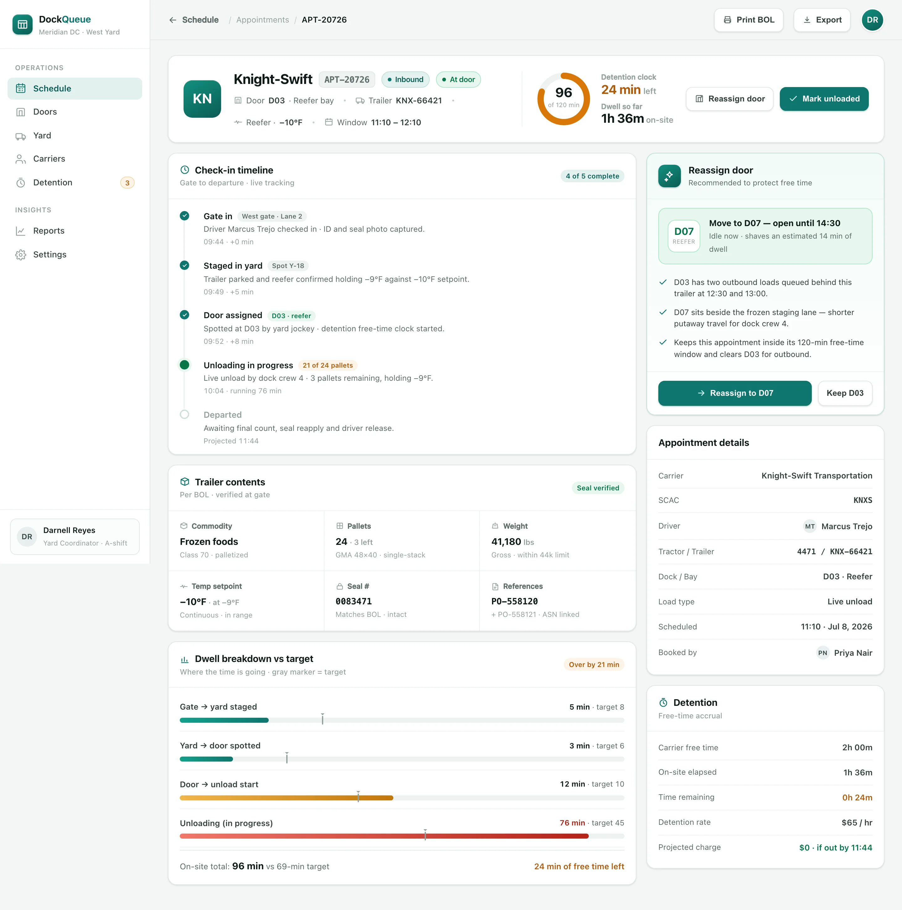

Book
Carriers self-book an inbound or outbound appointment against live door capacity — no double-booked slots, no phone tag with the guard shack.
DockQueue lets carriers self-book dock appointments, assigns the right door on arrival, and tracks every trailer's dwell — so detention charges stop before the free-time clock runs out.
When carriers arrive without a slot, doors pile up, trailers sit, and detention accrues invisibly. DockQueue closes the gap between the appointment book and the yard.
Carriers pick any time by phone or email — so four trailers show up for one open door at 10am.
No live yard map means trailers get "found" on a walkaround — while the clock keeps running.
Free-time overruns only surface on the carrier's invoice — weeks after anyone could have prevented them.
Every trailer's dwell breaks down into named stages — so you can see whether the time is at the gate, waiting for a door, or on the dock.
DockQueue runs the whole appointment lifecycle on one board — no clipboard, no whiteboard, no guesswork about who's at which door.
Carriers self-book an inbound or outbound appointment against live door capacity — no double-booked slots, no phone tag with the guard shack.
On check-in, DockQueue spots the trailer to the right door — matching reefer, hazmat and load type — and logs the yard location in real time.
Dwell and the detention free-time clock run live — coordinators get alerted before a trailer breaches, not after the charge lands.
BuildspaceLabs built the MVP front end: a live dock-door timeline for the whole facility, and a per-appointment file for the trailer at the door.
A door-by-door time grid places every appointment where it belongs — inbound and outbound colour-coded, at-door and delayed flagged, with a live "now" line and yard capacity alongside.

A check-in timeline from gate to departure, the trailer's contents, a dwell breakdown against target and a live detention clock — plus a one-tap door reassignment when a bay is blocking the flow.

Scheduling, door assignment, yard tracking and detention control on one operational surface — nothing left on a whiteboard.
Every door as a row against the day's time axis, appointments colour-coded by inbound and outbound.
A portal where carriers reserve inbound and outbound slots against real door capacity.
Every trailer's spot, state and dwell on a real-time yard map — no more walkarounds.
Each appointment's dwell broken into stages and measured against your target time.
A free-time countdown per trailer with alerts before an overrun turns into a charge.
Door utilization, on-time arrival rate and detention exposure trended over time.
Most detention is avoidable — it comes from doors, not carriers. DockQueue shows exactly where each trailer's minutes are going, so a coordinator can act while the clock is still running.
Delivered as a production-quality MVP in a seven-week engagement.
We build AI-native products like DockQueue. Tell us how your facility runs its docks and yard, and we'll show you what a live scheduling and detention system looks like on your operation.